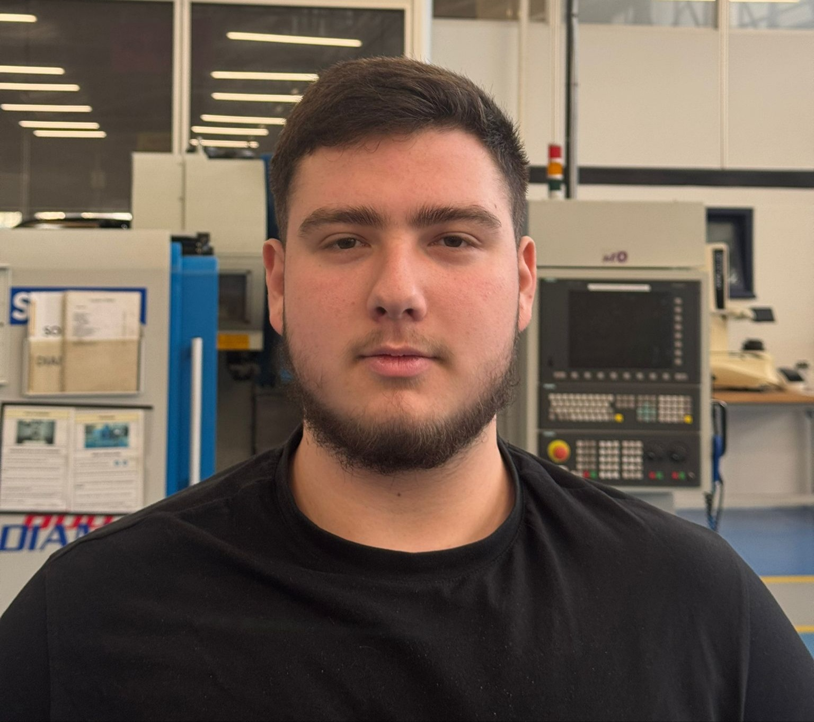
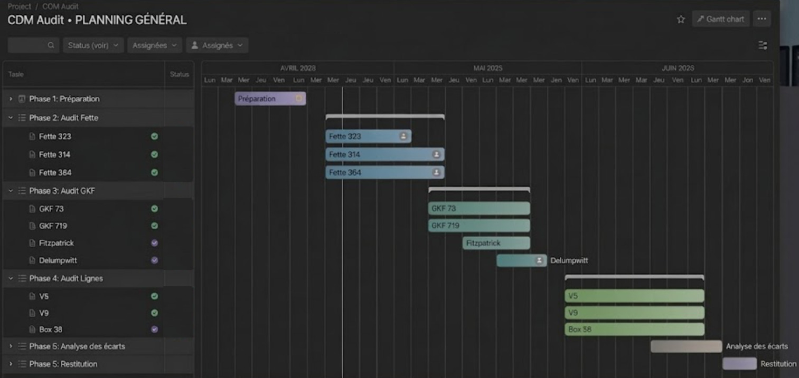
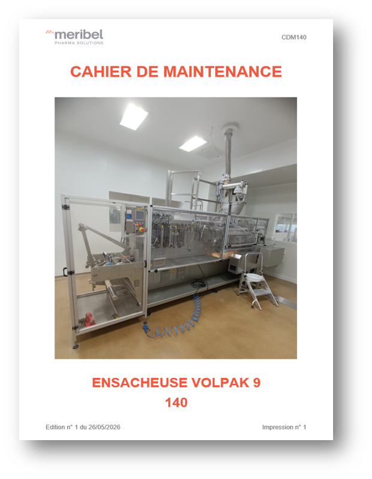
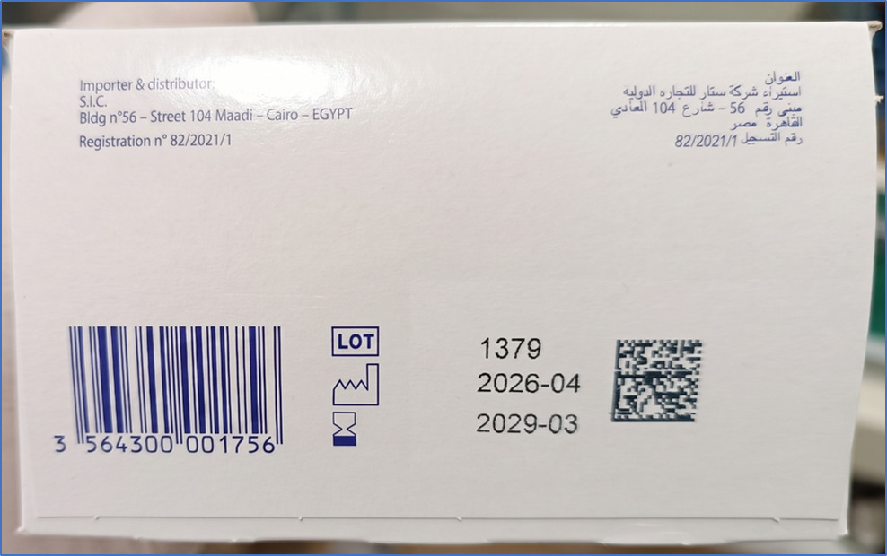

Enes Emin CUKUR
Étudiant en BUT Génie Mécanique et Productique (GMP)
Ma passion pour le génie mécanique est née dès le lycée lors de mes premiers défis de conception en STI2D. Transformer une esquisse numérique sous CAO en une pièce réelle utilisable a été un vrai tournant dans mon parcours scolaire. Ainsi j'ai naturellement choisi le BUT GMP pour approfondir la CAO mais j'y ai aussi découvert la rigueur de l'usinage à commande numérique, la métrologie tridimensionnelle et surtout la FAO. Mon immersion industrielle a renforcé cette certitude : mon ambition est d'optimiser les gammes de production et de participer aux méthodes d'usinage de haute exigence.

Vidéo de Présentation Synthétique
4 Piliers d'Excellence Professionnelle
Innovation & Créativité
Recherche continue de solutions techniques ingénieuses, optimisation géométrique sous SolidWorks et résolution méthodique de problématiques d'usinage complexes.
Organisation & Méthode
Structuration des contrats de phase, gestion du temps machine, suivi scrupuleux de la documentation technique et respect des jalons projets.
Aisance Relationnelle
Communication constructive en atelier comme au bureau d'études, transmission claire des consignes d'intervention et écoute active de l'équipe.
Dépassement de Soi
Constance dans l'effort, persévérance face aux aléas de fabrication, esprit d'initiative et volonté constante de montée en compétences techniques.
2. Réalisations Académiques
Quelques projets académiques marquants.
Production d'un Oeuf surprise "Projet Strike"
Élaboration d'un jouet constitué de différents matériaux et réalisé à l'aide de différents procédés de production.
Industrialisation d'une pièce de fonderie
Réalisation d'une pièce mécanique avec un procédé de fonderie et d'usinage.
3. En Entreprise : Méribel Pharma
Immersion professionnelle au service de la maintenance et de la production pharmaceutique.
Méribel Pharma Group
Conditionnement & Fabrication de produits de santé • Lignes automatisées à haute cadence
Intégré au service technique et maintenance, j'ai participé à la fiabilisation des équipements de conditionnement et au maintien en conditions opérationnelles des lignes de production dans le respect strict des Bonnes Pratiques de Fabrication.
1. Missions Principales
Responsabilités & Cadre opérationnelMise à jour/Création de documentations de maintenance en vue d'un audit client.
Création de documentation d'utilisation d'équipements.
Création de programme d'impression de "masque" de données en vue d'une démarche d'amélioration continue.
2. Objectifs Assignés
Indicateurs de réussite industrielleRéduire le temps moyen d'opérations de maintenance et de préparation.
Fiabiliser l'utilisation d'équipements spécifiques à la maintenance en vue d'un gain de temps.
Amélioration du processus d'impression de masque de données sur des étuis de médicament.
3. Tâches Réalisées
Opérations techniques quotidiennesAnalyse de la documentation existante, réalisation de l'inventaire des pièces nécessaires à la maintenance des équipements.
Tests et rédaction de la documentation d'utilisation des équipements.
Analyse de la documentation constructeur pour la création des masques de données.
4. Réalisations & Impact
Bénéfices mesurables pour l'usineGain de temps sur les opérations de maintenance permettant une reprise rapide de la production.
Utilisation plus efficace des équipements vérifiable par le repérage rapide des points de chaleur (caméra thermique).
Contrôle et validation du nombre d'étuis acceptés et rejetés selon la qualité d'impression.
Galerie Technique en Entreprise



4. Blocs de Compétences
Synthèse rédigée des pôles d'expertise technique, des méthodologies industrielles et des aptitudes professionnelles.
Conception & Modélisation CAO
Bureau d'Études • Dimensionnement RDMMaîtrise complète de la chaîne de conception sous Creo, de l'esquisse fonctionnelle à l'assemblage de mécanismes complexes. Pratique de la validation par calculs de résistance des matériaux (RDM) et simulations par éléments finis.
Méthodes, FAO & Usinage CN
Fabrication Mécanique • ProgrammationÉlaboration rigoureuse de gammes opératoires, contrats de phase et dossiers de fabrication. Programmation FAO sous TopSolid'Cam pour machines à commande numérique.
Contrôle Métrologique & Qualité
Laboratoire Tridimensionnel • ConformitéVérification métrologique sur machines à mesurer tridimensionnelles (MMT) et instruments manuels. Analyse statistique des processus industriels (Cp, Cpk).
5. Contact & Coordonnées
N'hésitez pas à me contacter pour toute opportunité de stage, d'alternance ou de collaboration.